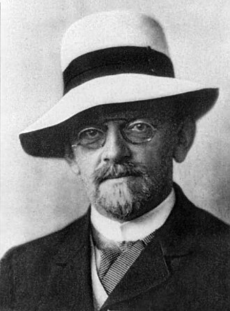

1862–1943
German
Algebra, analysis, geometry, mathematical logic, physics
David Hilbert was born in Königsberg (now Kaliningrad) and spent most of his career at the University of Göttingen, which under his leadership became the world's foremost centre for mathematics. He is widely regarded as the most influential mathematician of the late 19th and early 20th centuries, with major contributions to nearly every branch of the subject.
Hilbert's work on integral equations between 1904 and 1910 created the field we now call functional analysis. He studied the spectral theory of what he called "completely continuous" (compact) operators on infinite-dimensional spaces, proving that compact self-adjoint operators have a discrete spectrum of eigenvalues. The spaces he worked in — complete inner product spaces — were later named Hilbert spaces by von Neumann (1929), who gave the modern axiomatic definition.
The spectral theorem for compact self-adjoint operators, proved by Hilbert in 1904, is the infinite-dimensional generalisation of the diagonalisation of symmetric matrices. It unified the finite-dimensional spectral theorem (Cauchy, 1829) with Fourier's decomposition of functions into trigonometric series, showing that both are instances of the same abstract phenomenon. This unification — connecting linear algebra and Fourier analysis through a common framework — was one of Hilbert's deepest insights.
Beyond analysis, Hilbert revolutionised algebraic number theory (Zahlbericht, 1897), invariant theory (basis theorem, 1888–1890), geometry (axiomatisation, 1899), and mathematical logic (Hilbert's programme). His 1900 address to the International Congress of Mathematicians, listing 23 unsolved problems, is perhaps the most famous lecture in the history of mathematics. He died in Göttingen in 1943, during the war that had destroyed the mathematical community he had built.
| Phase | Page | Referenced for |
|---|---|---|
| Phase 6 | Eigenvalues and the Characteristic Polynomial | Introduced the term "Eigenwert" for integral equations (1904) |
| Phase 6 | Inner Products and Gram–Schmidt | Gram–Schmidt process for Hilbert spaces (function spaces) |
| Phase 6 | Orthogonal Projection | Recognised projection as the central idea (1906) |
| Phase 6 | The Spectral Theorem | Generalised spectral theorem to compact operators (1904) |
| Phase 9 | Metric Spaces | $\ell^2$ spaces as precursor to abstract metric spaces |
| Phase 13 | The Spectral Theorem | Spectral theorem for compact self-adjoint operators (1904) |
| Phase 13 | The Spectral Theorem | Coined "spectrum" from atomic spectral lines |
| Phase 13 | The Rayleigh Quotient and Courant-Fischer | Extension of Courant–Fischer to compact operators on Hilbert spaces |
| Phase 13 | The Principal Axis Theorem | Extended spectral theorem to infinite dimensions (1904–1910) |
| Phase 14 | Continuous Linear Maps and the Operator Norm | Operator norm implicit in Hilbert's work on integral equations |
| Phase 14 | Best Approximation in Hilbert Spaces | Developed theory of integral equations (1904–1910) |
| Phase 14 | Best Approximation in Hilbert Spaces | Von Neumann–Jordan theorem; Hilbert spaces named after him |